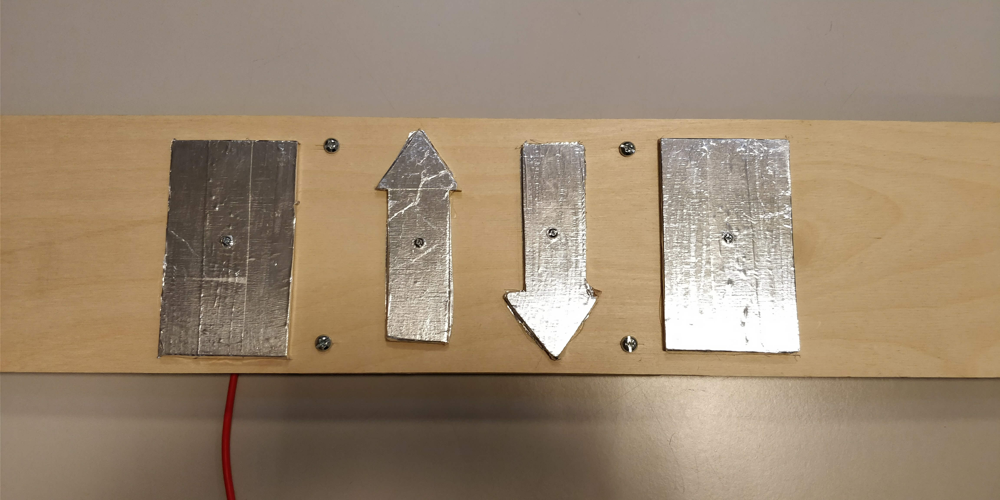
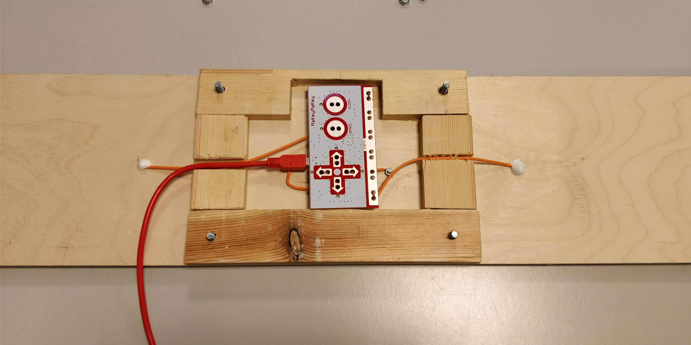

-
Spilprojekt - [Teknologi - B niveau] - [Kommunikation / IT - A niveau]
Vi lavede et spilprojekt om at man kunne se museer gennem VR-headsets.
Som ville gøre det nemmere for handicapped i kørestol at se et museum.
Dette løste vi ved at tage Photospheres, inde på museet.
Som gjorde man kunne tage VR-briller på, og se rummet for sig, imens man sad der hjemme.
Dette ville også løse problemet med at tage til udlandet for at se et museum.
Så vil man bare kunne købe sig adgang til at et museum, og se det hjemme i stuen.
Her ser vi vores produkt i brug. Dette er Simon Josefsen som tester vores produkt. Som også var med til at designe og skabe produktet.
Her ser vi endnu et billede hvor der testes

Her ser vores controller til at styre billederne.
Her ser vi bagsiden af controlleren, hvor vi har brugt en Makey-makey til at styre det.
Her ser vi et billede i 360/Photoshpere, sådan ser det ud, inden man kører det igennem et Photoshpere Viewer.
**Klik på billedet for at se det i 360.**